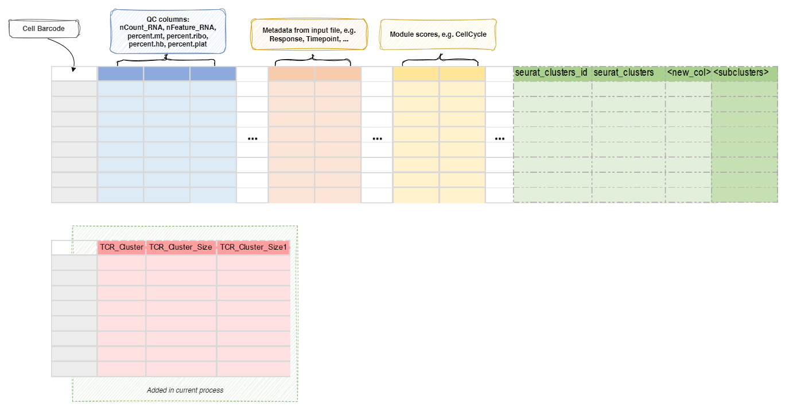

IntegratingTCR¶
Attach TCR clone information as meta columns to Seurat object
This process is used to integrate scTCR-seq data into the Seurat object.
The scTCR-seq data is loaded by ImmunarchLoading
process. The integration is done by matching the barcodes from the Seurat
object and the scTCR-seq data.
The barcodes from the scTCR-seq data are prefixed with the sample name,
for example, Sample1_AAACCTGAGAAGGCTA-1. The prefix is specified by the
prefix environment variable in the ImmunarchLoading
process.
ImmunarchLoading process will generate a text file
with the information for each cell. ImmunarchLoading.envs.metacols can be
used to specify the columns to be exported to the text file, which will then be
integrated into the Seurat object by this process.
You may also use envs.mutaters to add new columns to the metadata.
These columns can be used for downstream analysis.
An additional column TCR_Presence is added so later on we can overlay the
TCR presence on the dimension reduction plot in
SeuratClusterStats process.
Warning
If you are modifying envs.mutaters, make sure you keep the TCR_Presence
column if you have scTCR-seq data available by:
[IntegratingTCR.envs.mutaters]
TCR_Presence = 'if_else(is.na(CDR3.aa), "TCR_absent", "TCR_present")'
# other mutaters
Because by default, SeuratClusterStats
process will use this column to overlay the TCR presence on the dimension
reduction plot with scTCR-seq data available.
Environment Variables¶
-
mutaters(type=json): Default:{'TCR_Presence': 'if_else(is.na(CDR3.aa), "TCR_absent", "TCR_present")'}.
The mutaters to mutate the metadata.
The key-value pairs will be passed thedplyr::mutate()to mutate the metadata.
There are also also 4 helper functions,expanded,collapsed,emergedandvanished, which can be used to identify the expanded/collpased/emerged/vanished groups (i.e. TCR clones).
See also https://pwwang.github.io/immunopipe/configurations/#mutater-helpers.
For example, you can use{"Patient1_Tumor_Collapsed_Clones": "expanded(., Source, 'Tumor', subset = Patent == 'Patient1', uniq = FALSE)"}to create a new column in metadata namedPatient1_Tumor_Collapsed_Cloneswith the collapsed clones in the tumor sample (compared to the normal sample) of patient 1.
The values in this columns for other clones will beNA.
Those functions take following arguments:df: The metadata data frame. You can use the.to refer to it.group.by: The column name in metadata to group the cells.idents: The first group or both groups of cells to compare (value ingroup.bycolumn). If only the first group is given, the rest of the cells (with non-NA ingroup.bycolumn) will be used as the second group.subset: An expression to subset the cells, will be passed todplyr::filter(). Default isTRUE(no filtering).each: A column name (without quotes) in metadata to split the cells.
Each comparison will be done for each value in this column (typically each patient or subject).id: The column name in metadata for the group ids (i.e.CDR3.aa).compare: Either a (numeric) column name (i.e.Clones) in metadata to compare between groups, or.nto compare the number of cells in each group.
If numeric column is given, the values should be the same for all cells in the same group.
This will not be checked (only the first value is used).
It is helpful to useClonesto use the raw clone size from TCR data, in case the cells are not completely mapped to RNA data.
Also if you havesubsetset orNAs ingroup.bycolumn, you should use.nto compare the number of cells in each group.uniq: Whether to return unique ids or not. Default isTRUE. IfFALSE, you can mutate the meta data frame with the returned ids. For example,df |> mutate(expanded = expanded(...)).debug: Return the data frame with intermediate columns instead of the ids. Default isFALSE.order: The expression passed todplyr::arrange()to order intermediate dataframe and get the ids in order accordingly.
The intermediate dataframe includes the following columns:<id>: The ids of clones (i.e.CDR3.aa).<each>: The values ineachcolumn.ident_1: The size of clones in the first group.ident_2: The size of clones in the second group..diff: The difference between the sizes of clones in the first and second groups..sum: The sum of the sizes of clones in the first and second groups..predicate: Showing whether the clone is expanded/collapsed/emerged/vanished.include_emerged: Whether to include the emerged group forexpanded(only works forexpanded). Default isFALSE.include_vanished: Whether to include the vanished group forcollapsed(only works forcollapsed). Default isFALSE.
You can also use
top()to get the top clones (i.e. the clones with the largest size) in each group.
For example, you can use{"Patient1_Top10_Clones": "top(subset = Patent == 'Patient1', uniq = FALSE)"}to create a new column in metadata namedPatient1_Top10_Clones.
The values in this columns for other clones will beNA.
This function takes following arguments:
*df: The metadata data frame. You can use the.to refer to it.
*id: The column name in metadata for the group ids (i.e.CDR3.aa).
*n: The number of top clones to return. Default is10.
If n < 1, it will be treated as the percentage of the size of the group.
Specify0to get all clones.
*compare: Either a (numeric) column name (i.e.Clones) in metadata to compare between groups, or.nto compare the number of cells in each group.
If numeric column is given, the values should be the same for all cells in the same group.
This will not be checked (only the first value is used).
It is helpful to useClonesto use the raw clone size from TCR data, in case the cells are not completely mapped to RNA data.
Also if you havesubsetset orNAs ingroup.bycolumn, you should use.nto compare the number of cells in each group.
*subset: An expression to subset the cells, will be passed todplyr::filter(). Default isTRUE(no filtering).
*each: A column name (without quotes) in metadata to split the cells.
Each comparison will be done for each value in this column (typically each patient or subject).
*uniq: Whether to return unique ids or not. Default isTRUE. IfFALSE, you can mutate the meta data frame with the returned ids. For example,df |> mutate(expanded = expanded(...)).
*debug: Return the data frame with intermediate columns instead of the ids. Default isFALSE.
*with_ties: Whether to include ties (i.e. clones with the same size as the last clone) or not. Default isFALSE.
Metadata¶
The metadata of the Seurat object will be updated with information from
TCR data:

All of the columns above can be used for downstream analysis.